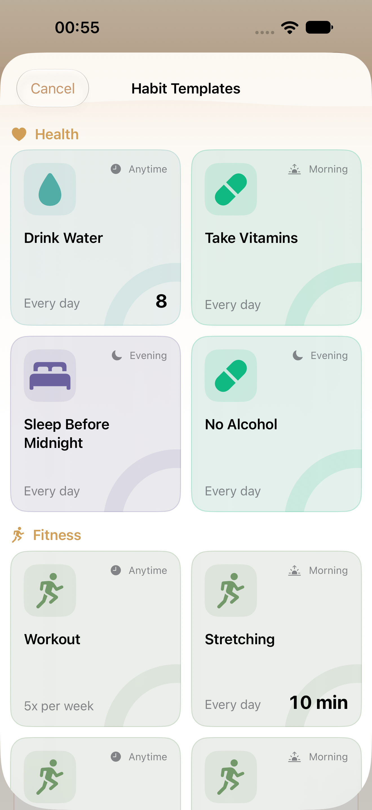

습관 템플릿 · L03 실제 앱
구현 소스4f052fa7. iPhone 기본/최대 글씨 UI2/2, iPad 기본 UI1/1을 확인했습니다. 아래는 새 XCTest 실제 원본이며 브라우저 시안이 아닙니다. Duo 접힘/펼침은 아직 검증 중으로 기존 이미지를 새 증거로 싣지 않습니다. 밝음·영어만 확인했으며 모든 테마/언어 검증을 의미하지 않습니다.
iPhone · 기본 글씨

대기 중
Duo 접힘은 저장소 테스트 잠금 해제 확인 후1회 재시도 중입니다. 펼침 전환은 Mac 잠금 해제를 기다립니다. 전체 UI·Ship 게이트는 완료되지 않았습니다.